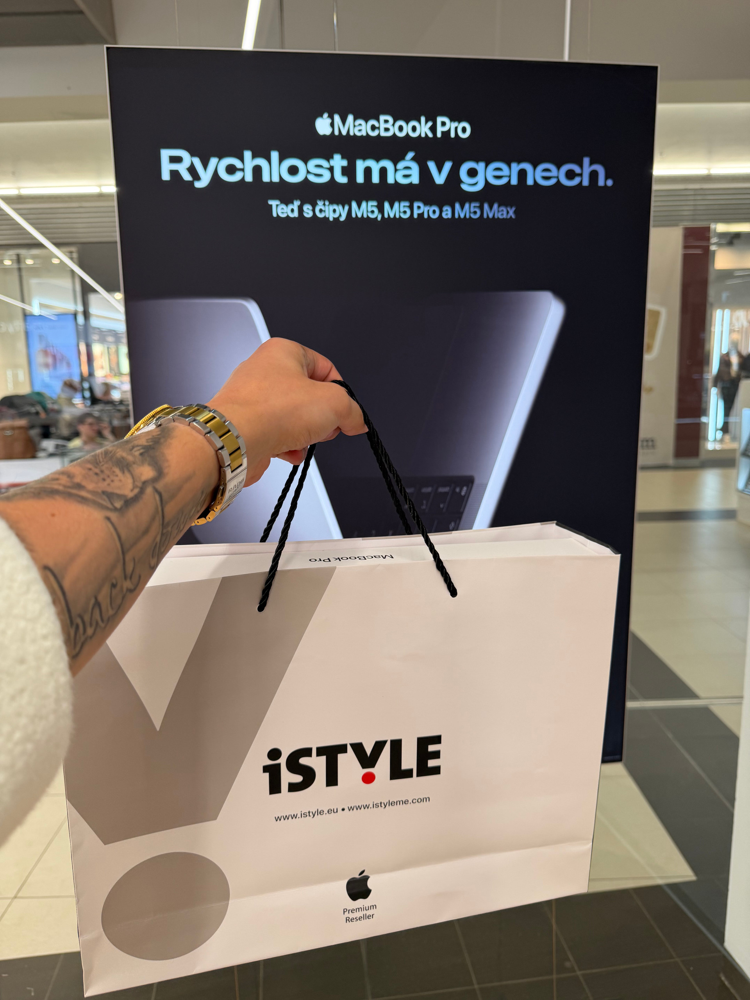
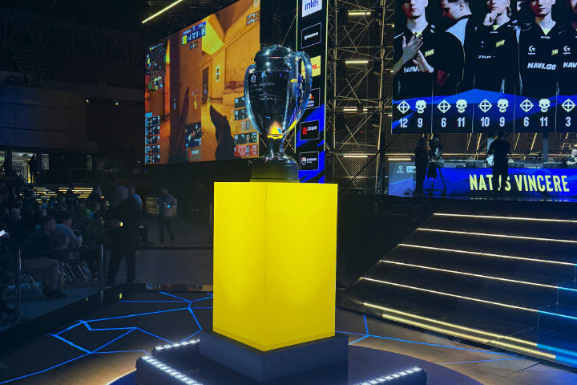
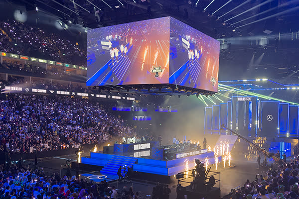
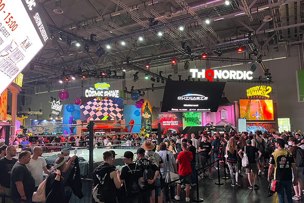
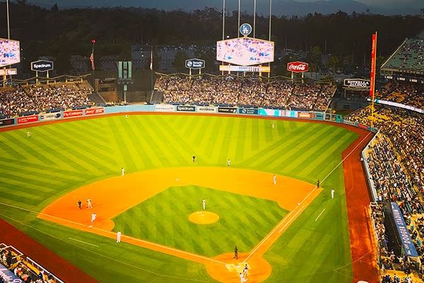
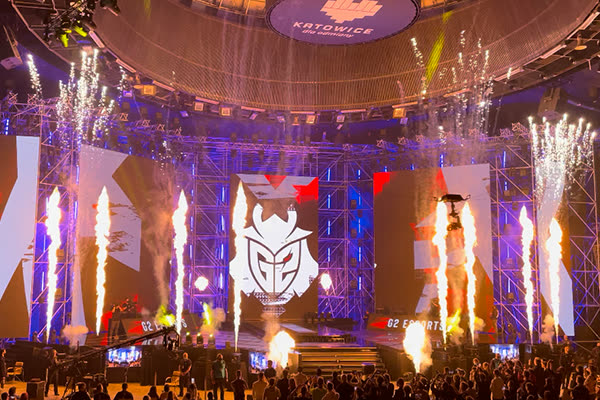
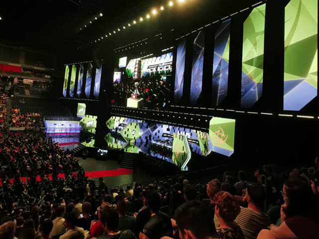
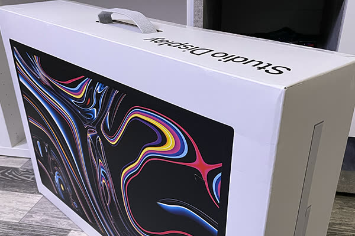
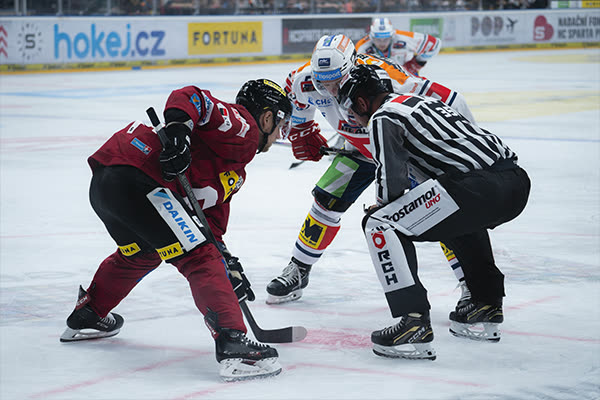

Upgrading from M2 Pro to the New M5 Pro Max: Is It Worth It? ▮▪
Today Apple introduced a new generation of MacBook Pro machines powered by the M5 Pro Max chip. As someone working in photo and video production, I decided to upgrade immediately. But the ob…

Intel Extreme Masters 2025 Counter Strike - Katowice
In February, I headed to Intel Extreme Masters in Katowice once again—this time for the fourth time overall.“It’s one of my all-time favorite events, mainly because the atmosphere inside the…

WORLDS 2024 League of Legends - London The O2 arena
The finals took place in London, and fans had the chance to arrive early for the festival outside the arena. On-site, you could buy themed merchandise, try out the new ARAM mode, take photos…

Gamescom - The Biggest Gaming Fair in Europe, Cologne
In today’s article, we’ll talk about the biggest gaming fair in Europe. Gamescom is held annually in Cologne, Germany, and is extremely popular among gamers. Unlike E3, this event is more fo…

E3 Expo 2018 Los Angeles USA
It’s the year 2018, and I find out that this year I’ll be going to the biggest gaming expo — E3 in Los Angeles. For people who follow the gaming world, it was the most traditional and above …

Intel Extreme Masters 2022 Katowice
Another amazing event that definitely deserves its own article! I’ve had the chance to attend this tournament several times, and I even remember when League of Legends used to be played here…

ESL ONE 2019 Cologne
In 2019, I got an amazing opportunity to attend this huge Counter-Strike event as a guest. I owe this opportunity to Martin Polášek, and I want to send a big thank you to him in retrospect! …

Apple Studio Display Product Review
Today, I’m writing a slightly different type of article than usual. I want to start sharing more about my work trips on my website what I’ve experienced, the projects I’ve worked on, and the…

HC Sparta Praha vs HC Dynamo Pardubice 02 arena - Praha
We have another article today, this time about photography. Shooting sports is always a big challenge, but hockey is much faster compared to football. Choosing the right gear is very importa…
Why Apple? Products That Influence My Work Every Day
I’ve had this article in mind for quite some time. I’ve been using Apple products for years, and I’ll never forget what it felt like to hold my very first iPhone 3G. Since then, technology h…